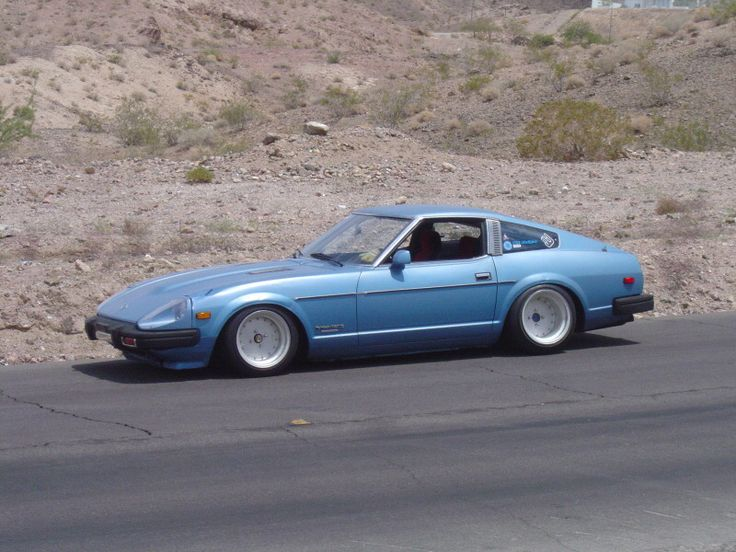
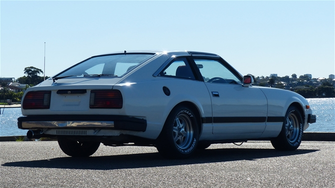

"Datsun 280ZX (S130) 1978-1983"
The infamous 280ZX. Following the pain and suffering of the 80s, Datsun too had to make some difficult decisions. This car was developed, with all the right ingredients! Other than it's overall ugly styling. Datsun's first sportscar to feature Electronic Fuel Injection, the 280Z recieved the X to express the Luxury these cars provide. This marked Datsun's pivot, from Sport/Race cars to a broader market of Grand Touring cars!. The Cushy leather seats, Digital Dash, and Factory Turbocharged L28 gave this car an incredible kick, and despite it's lacking looks, they sold very well!
 Lowered, however... Coilovers give these cars a whole new look. In my opinion, the 280ZX was sold as a muscle car with nerdy glasses, as it's front fascia completely missed the mark. With a little bit of love, and a whole lot of aftermarket parts, these cars can be some of the coolest on the planet. Take note of the flat corner window compared to the triangular corner window! 2 Seaters always had full triangles, wheras the 2+2 Z cars never had full triangular windows. 